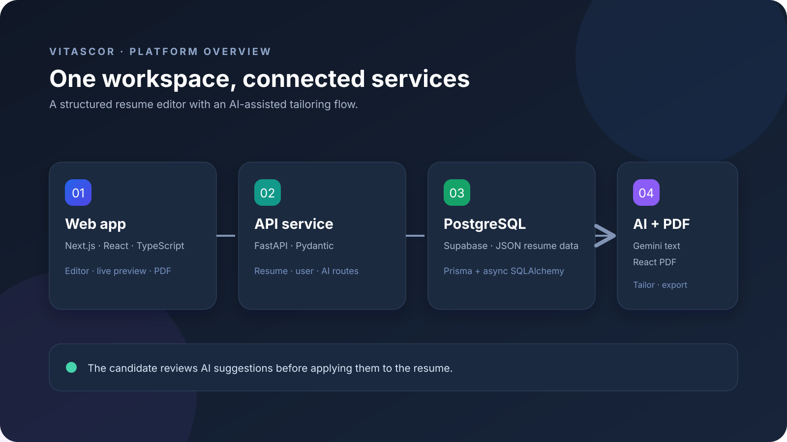
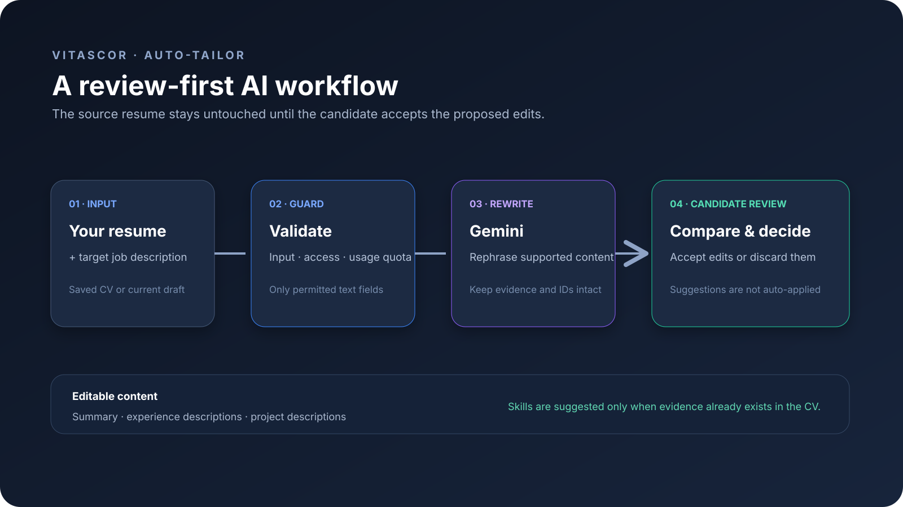
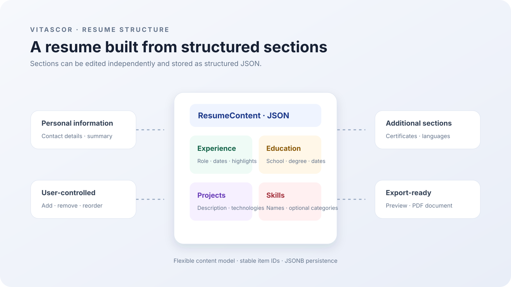
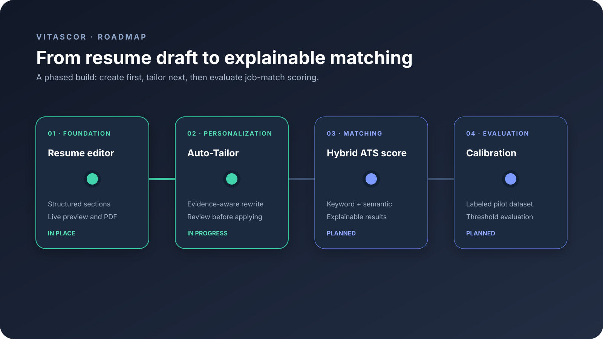

AI suggestions are reviewed before they are applied to the resume.
Resume creation · AI-assisted tailoring
A better story for every application.
Take a quick tour through Vitascor: how the product is structured, how candidate-reviewed tailoring works, and what is planned next.
Platform architecture
The services behind the resume editor and AI-assisted rewrite.




A connected web app, API, database, and AI service.
Resume details are edited as reusable sections, not a single block of text.
Resume creation and tailoring come first; hybrid ATS scoring is a planned next phase.